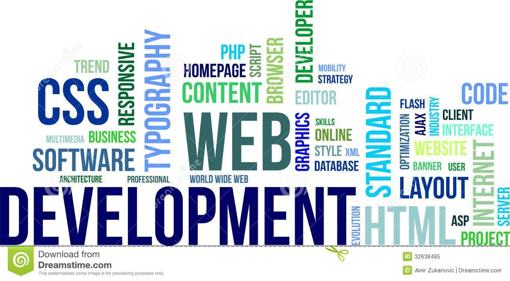

Sprite Sheet + Step Animation
.hi {width: 50px; background-image: url(hi.png);animation: play .8s steps(10) infinite; }@keyframes play {from { background-position: 0; }to { background-position: -500px; } }}
Часть первая из трёх
Докладчик Ярошевич Дмитрий
ссылки могут и должны быть в т.ч. якорями: text.com#about
<dl><dt>Термин</dt><dd>Пояснение термина</dd></dl>
<table><thead> <th>Column</th> </thead><tr> <td> Cell </td> </tr><tfoot> <td>Column</td> </ttfoot></table>
.hi {width: 50px; background-image: url(hi.png);animation: play .8s steps(10) infinite; }@keyframes play {from { background-position: 0; }to { background-position: -500px; } }}
background-size: size | % | auto | cover | contain
cover масштабирует пропорционально так, чтобы ширина(высота) равнялась ширине(высоте) блока
contain масштабирует пропорционально так, чтобы быть полностью в блоке
Поддержка:
IE9+, FF4+, Chrome3+, Opera10.53+, Safari4.1+, Android2.1+, iOS1+
поддержка без префиксов
@media all and (min-width: 800px) and (max-width: 1024px) {div {width: 1500px;}}
@media @media all and (orientation: landscape)@media only all@media all and (not handheld)@media (orientation: portrait), (min-width: 90px)@media (min-width: 800px) and (max-width: 1024px) {div {width: 1500px;}}